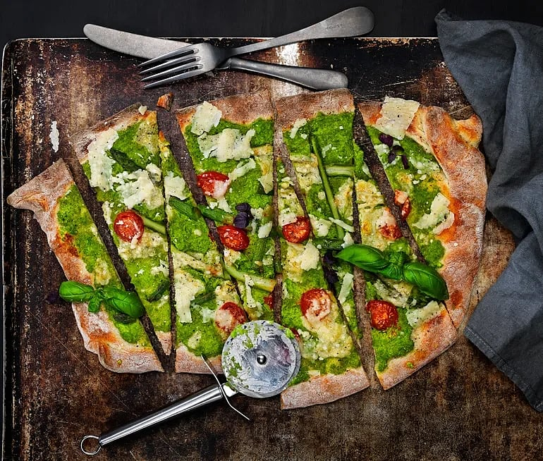

Tillbaka
Grön pizza med ärtcrème

Vegetarisk
Go green med den här vegopizzan bottnad med ärtcrème så ljuvlig att du inte kommer att vilja se åt tomatsås igen. Sparris och parmesan lyfter pizzan ytterligare och ärtcrèmens hetta justerar du enkelt med grön tabasco.
Ingredienser
Ärtcrème
- 300 g frysta gröna ärtor (tinade)
- 2 msk olivolja
- några droppar grön tabasco
- salt
Pizzabotten
- 2 port färdigköpt pizzadeg
Topping
- 100-150 g fryst grön sparris (tinade och delade på längden)
- ca 200 g körsbärstomater delade på mitten
- 100-150 g parmesan
- svartpeppar
- färsk basilika till garnering
Gör så här
- Sätt ugnen på 250-275°C
- Ärtcrème: Mixa tinade ärter och olivolja till en krämig sås. Smaksätt med salt och grön tabasco.
- Botten: Fördela ärtkrämen över pizzabotten.
- Topping: Lägg sparris och tomater på pizzan. Riv hälften av parmesanosten och strö över. Grädda pizzan i mitten av ugnen cirka 15 minuter.
- Låt svalna något och garnera med hyvlad parmesan, ett par basilikablad och några varv med pepparkvarnen.